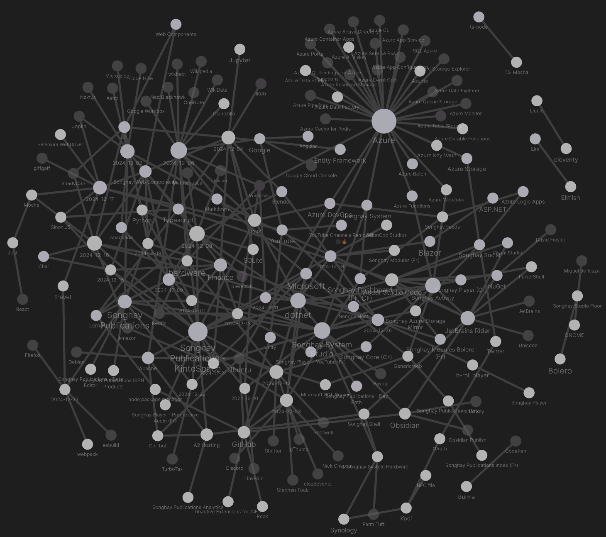
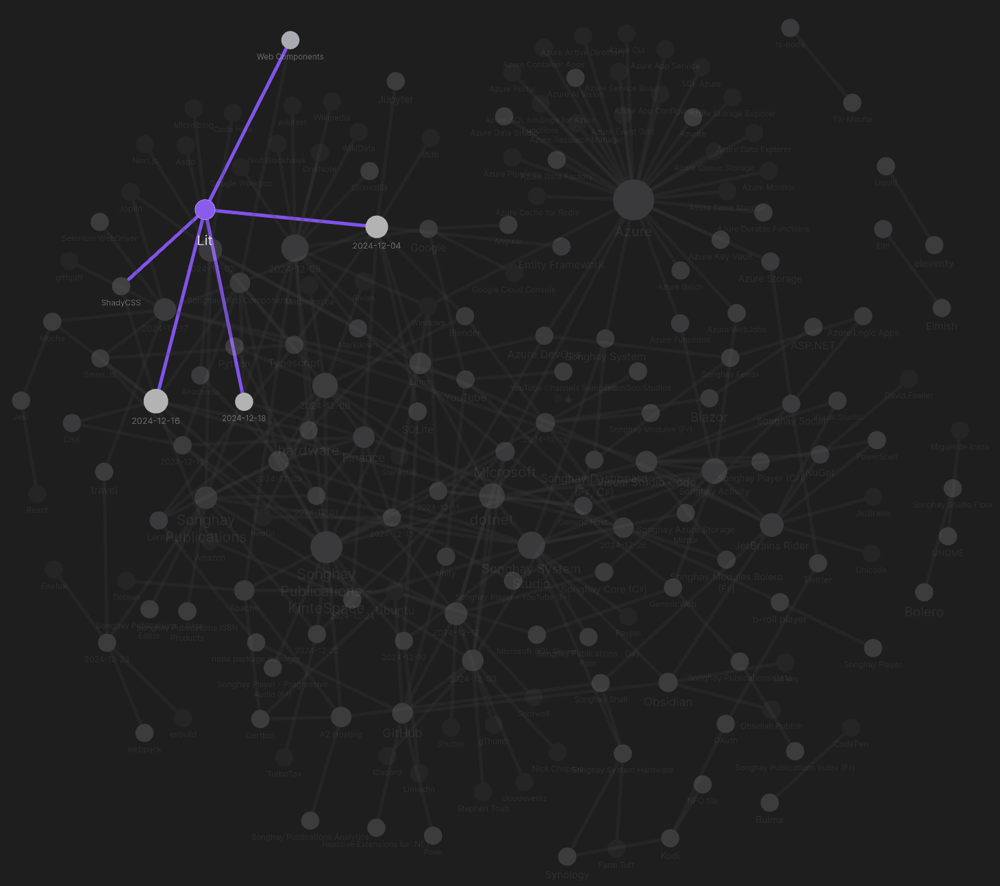
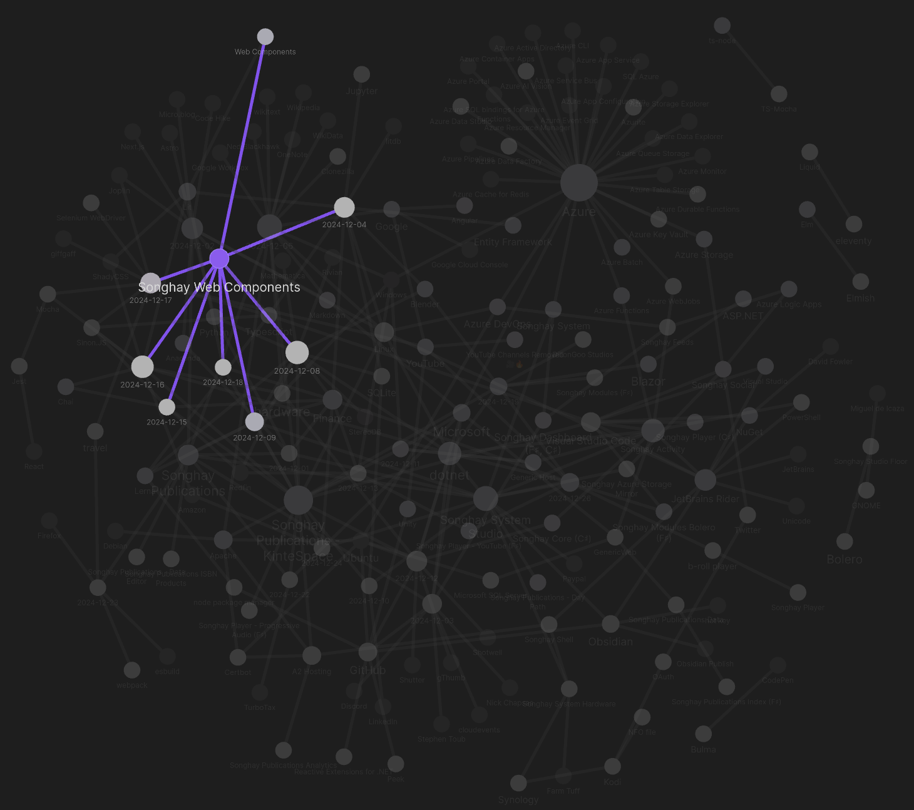
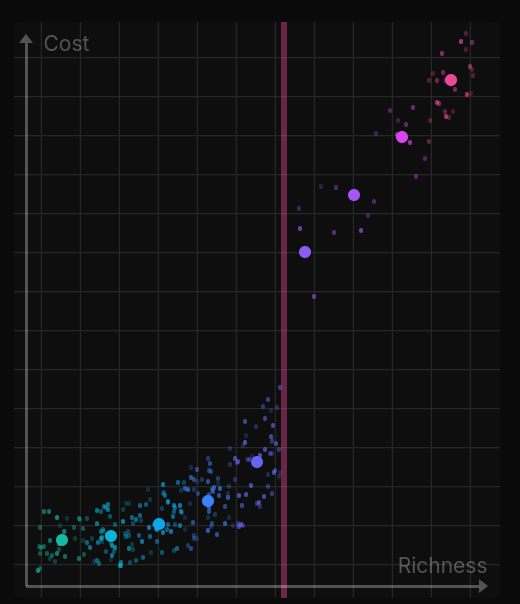
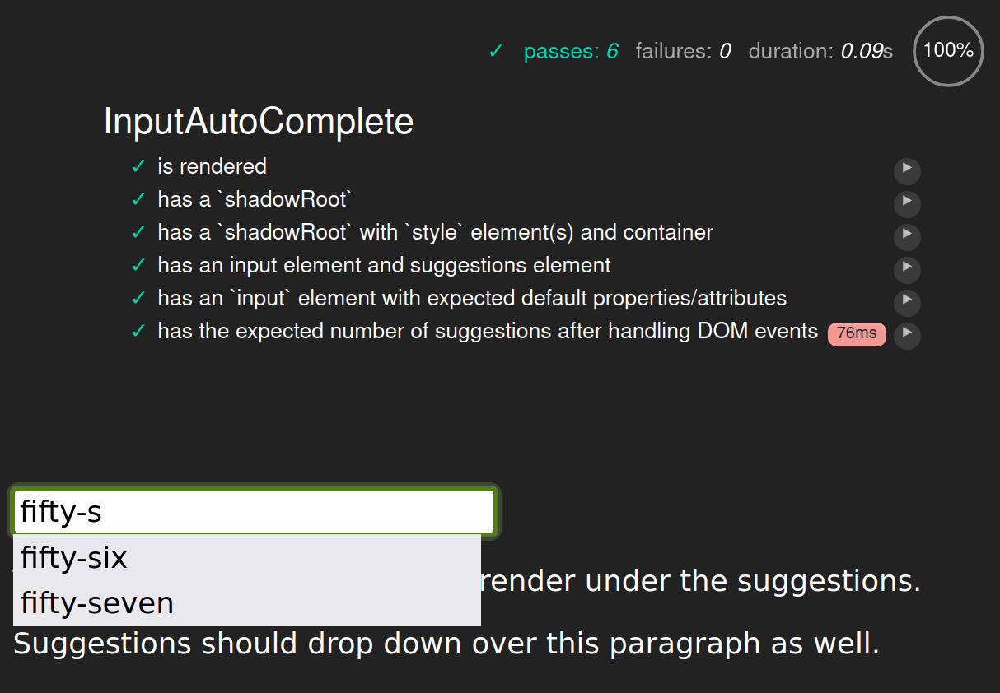

studio status report: 2024-12
month 12 of 2024 was about upgrading the F♯ package stacks to .NET 8.0, upgrading Songhay Web Components to Lit 3.x and getting sick while on #day-job vacation
The Obsidian notes for this month should reflect slogging through the unpleasant process of upgrading Lit for Songhay Web Components [GitHub]. This upgrade would go into the JavaScript bundle that would back the new homepage for kintespace.com. The Obsidian Graph View for the month shows how Lit [GitHub] work pops up to the left of the massive Azure node:



The graph is not showing any direct relationship between Lit and Songhay Web Components which means there is still a lot for me to learn about data visualization as a way of life. It must also be said that the Obsidian is seeing Lit for the first time this month which is an indicator of poor time management and greed. I think I am promising myself to streamline my interests/investments—which should be shown in the Obsidian graph over time.
In the mean time, back to slogging through selected Obsidian notes:
[[Anaconda]]: “Can I make conda solve this environment faster?”
When [[Anaconda|conda]] is hanging, trying to “solve the environment,” one or more of the following may be evident:
- “too many” packages are installed in one environment
- all of the packages are too old, having breaking changes
condaitself is out of date and is encountering breaking changes with ‘sources’
A GitHub issue shows how tempers flare over this issue 😐
[[Songhay Publications]]: “The Curse of Markdown”
“The Curse of Markdown” complains about how the publishing process is disjointed because of the presence of [[Markdown]]:

The author of this prose just happens to be a software developer working on getting rid of this disjointed situation:
Rodrigo Pombo, a.k.a. @pomber, is a software overengineer working on Code Hike, an open-source library that bridges the gap between Markdown and React to help developers create rich technical content for the modern web.
[[dotnet|.NET 9.0]]: I am not seeing Kathleen Dollard mention how fast params IReadOnlySpan<T> is compares to the other params collections
In “Calling methods is easier and faster with C# 13 params collections,” params IReadOnlySpan<T> is not distinguished at all. One way to look at it is that performance considerations can be left to others—like the lead designer of C♯:

What's new in C# 13
This video introduces the OverloadResolutionPriority attribute [📖 docs ] as described in “Understanding OverloadResolutionPriority attribute in C# 13.”
[[Songhay Web Components]]: working with [[Lit]] latest
In order for decorators like @property to compile in [[Typescript]], two compilerOptions [📖 docs ] properties need to be set in tsconfig.json:
{
"compilerOptions": {
"experimentalDecorators": true,
"useDefineForClassFields": false,
}
}
For more details, see “Using decorators with TypeScript” 📖
[[Typescript]]: the as keyword is a type assertion—not type casting ⚡🧠
In “TypeScript's as keyword might not be what you think” we have:
…TypeScript's
as MyTypeonly changes compile time behavior. It's like saying to the compiler "Compiler, believe me. This is aMyType. So stop complaining." Nothing has changed for the resulting JavaScript code after compiling. In other words, we're still completely vulnerable at runtime. That's why TypeScript actually uses the term Type Assertion [instead] of Type Casting.
[!important] Use the
in“type guard” [📖 docs ] to verify that a type assertion is correct.
The
inkeyword in JavaScript and TypeScript checks whether a property exists on an object. In the above example, we use it to check whether theaddLemonproperty exists on thehotBeverageobject at compile time and at runtime. If it does, TypeScript know it's aTeabecause the other optionCoffeedoes not have anaddLemonproperty. On the other hand, if the object does not have anaddLemonproperty it must beCoffee. Unlikeas, sinceinis a JavaScript keyword it acts at runtime, too.
[[hardware]]: I have not written a note about [[Clonezilla]] since before 2018 😐
I would like to upgrade my [[Linux]] workstation, Songhay13—but I would like to do this after backing up its system files. My investment in [[Clonezilla]] is meant to do this. But this investment is—like many other things in this Studio—neglected 😐
[[Songhay Web Components]]: typedocOptions have changed❓
Here are the current—apparently old—options in packages/input-autocomplete/tsconfig.json:
"typedocOptions": {
"entryPoint": "./src/input-autocomplete.ts",
"exclude": "**/*.spec.ts",
"excludeExternals": true,
"inputFiles": "./src",
"mode": "modules",
"out": "../../docs/input-autocomplete",
"readme": "none",
"stripInternal": true
}
The [[Lerna]] script output:
Executing task: npm run lerna:exec:typedoc
> songhay-web-components@1.0.0 lerna:exec:typedoc
> npx lerna exec -- typedoc
lerna notice cli v8.1.9
lerna info Executing command in 1 package: "typedoc"
[error] Unknown option 'entryPoint' You may have meant:
entryPoints
[error] Unknown option 'inputFiles' You may have meant:
options
outputs
out
html
emit
name
inlineTags
plugin
locales
theme
cname
titleLink
[error] Unknown option 'mode' You may have meant:
name
out
theme
cname
html
json
emit
readme
sort
help
[error] Unknown option 'stripInternal' You may have meant:
sourceLinkExternal
sort
excludeInternal
titleLink
html
json
emit
name
readme
help
[error] Found 4 errors and 0 warnings
lerna ERR! typedoc exited 1 in '@songhay/input-autocomplete'
lerna ERR! typedoc exited 1 in '@songhay/input-autocomplete'
* The terminal process "/usr/bin/bash '-i', '-c', 'npm run lerna:exec:typedoc'" terminated with exit code: 1.
[[Songhay Web Components]]: yes, typedocOptions have changed 😐
According to the traditional, bad-design foresight of the JavaScript-kiddie world, there are copious breaking changes for typedocOptions [📖 docs ].
Following up the previously noted state, we need to go from this:
"typedocOptions": {
"entryPoint": "./src/input-autocomplete.ts",
"exclude": "**/*.spec.ts",
"excludeExternals": true,
"inputFiles": "./src",
"mode": "modules",
"out": "../../docs/input-autocomplete",
"readme": "none",
"stripInternal": true
}
…to this:
"typedocOptions": {
"entryPoints": ["./src/input-autocomplete.ts"],
"exclude": ["**/*.spec.ts"],
"excludeExternals": true,
"out": "../../docs/input-autocomplete",
"readme": "none"
}
I am guessing (because the docs do not support multiple versions) that inputFiles and mode have been deprecated in favor of reading the rest of the tsconfig.json file (instead of reinventing the wheel 🎡✨). This guess comes from a GitHub comment that explains what happened to stripInternal:
stripInternalis a TypeScript option (https://www.typescriptlang.org/tsconfig#stripInternal). In 0.20, TypeDoc dropped support for setting TypeScript options via TypeDoc config files.
[[Songhay System Studio]]: “The death of the stubborn developer”
One problem is that the circuit that lets junior developers grow into senior developers is broken or at least damaged. I’m borrowing an apt analogy from Dr. Matt Beane, who describes the same phenomenon happening with junior surgeons due to the emergence of surgery robots. Very similar situation: The task graph leaf nodes are automated now, so we don’t need (as many) junior contributors.
…
I’ve recently talked to two polar-opposite companies — one where the juniors have adopted chop, but the seniors stubbornly refuse, saying it’s a gimmick. And another where the seniors have adopted chop, but the juniors refuse, the reason being that they think it will take their jobs. It’s craziness out there.
…
…Chat-Oriented Programming, CHOP for short (or just chop). Chop isn’t just the future, it’s the present. And if you’re not using it, you’re starting to fall behind the ones who are.
[[Songhay System Studio]]: first pass at advice for beginner Web developers
In response to this potentially fake LinkedIn message:
Learn by doing—and do this independently of the company you might be working for. That means having your own GitHub repo which should be shown/mentioned during or before interviews. Also, you should use something like https://codepen.io/ and https://stackblitz.com to self-teach and self-promote.
Regardless of your preference for React, use MDN, https://developer.mozilla.org/en-US/, as a neutral reference for “pure” CSS and HTML and start casually reading sites like https://css-tricks.com/.
In order to invest in a solid understanding of JavaScript for the client and the eventually the server, read JavaScript: The Good Parts: The Good Parts by Douglas Crockford (he also has lectures on YouTube).
Because I could not find a ‘Douglas Crockford’-like guru for Node.js, I started my own, self-teaching repo, https://github.com/BryanWilhite/nodejs. I recommend you do the same.
Feel free to write me any questions.
[[dotnet|.NET]]: for default implementations of ILogger, use the term debug instead of the word verbose #day-job
When faced with the potential problem of gigantic logs because of their verbosity for a default [[Generic Host|.NET Generic Host]], consider the following:
- replace
ILoggercalls toLogInformationwithLogDebugcalls - replace
ILoggercalls toLogWarningwithLogDebug("Warning:…")calls - replace
ILoggercalls toLogErrorwithLogDebug("Error:…")calls - add an overload with a
LogLevelargument for anyILoggerextension methods in order to supportLogDebug(and maybeLogTrace) - ensure that you have a production-ready
appSettings.jsonfile with something like the following:
{
"Logging": {
"LogLevel": {
"Default": "Information"
}
}
}
The
LogLevelspecifies the minimum level to log for selected categories. …LogLevelindicates the severity of the log and ranges from 0 to 6:
Trace= 0,Debug= 1,Information= 2,Warning= 3,Error= 4,Critical= 5, andNone= 6.
[!important] Dropping a copious amount of
LogInformationcalls ‘down’ toLogDebugcalls, with theappSettings.json,"Logging"setting shown above, ensures that verbosity will be eliminated in harmony with the defaults coming from [[Microsoft]].
[[Songhay Core (C♯)]]: add an overload, isCommandLineSwitch to HasArg extension method 🔨✨
Add isCommandLineSwitch to support args like:
--dry-run=true--dry-run=false
…such that --dry-run=false will make HasArg return false and --dry-run=true will make HasArg return true.
This change is needed to address the current lack of command-line “switch” support in the CommandLineConfigurationExtensions.AddCommandLine [📖 docs ] extension method.
There is a [[GitHub]] issue #36024 that has been open since 2019, requesting that command-line “switch” support be added.
[!important] [[GitHub]] issue #177 has been lodged to effect these changes.
[[Songhay Publications - KinteSpace|kintespace.com]]: “Sweat and stone: The children powering Nigeria's lithium boom”
Lithium mining has transformed Pasali over the past decade, creating a hub of illegal operations. Workers, including children, use primitive tools to extract and sort lithium ore. Young miners like 19-year-old Bashir Rabiu, who started working as a child, recall witnessing deadly accidents in the dangerous pits.
Children like Juliet and her peers can collectively sort up to 10 bags of lithium-rich ore daily, earning around $2.42 to share among themselves. Many, like Juliet, had to drop out of school due to financial constraints. Although education is technically free in government schools, additional fees make it inaccessible for the poorest families.
—“Sweat and stone: The children powering Nigeria's lithium boom”
[[Windows]]: “Microsoft now allowing Windows 11 on older, incompatible PCs” 😐
Not even a week ago, Microsoft doubled down on its policy that requires PCs to have TPM 2.0-compatible hardware in order to install Windows 11. But now, in an unexpected and puzzling move, the company is issuing instructions for installing Windows 11 on incompatible PCs.
You can find those official instructions on this support page. However, Microsoft begins the instructions with a direct warning:
“Installing Windows 11 on a device that doesn’t meet Windows 11 minimum system requirements isn’t recommended. If Windows 11 is installed on ineligible hardware, you should be comfortable assuming the risk of running into compatibility issues.”
The risk alluded to here includes system crashes and the lack of crucial security updates that would otherwise keep the PC safe and protected against malware, hackers, and scammers.
—“Microsoft now allowing Windows 11 on older, incompatible PCs”

Wait, What?
modern [[Lit]] does not use shadow DOM style elements by default
What is clearly documented by the [[Lit]] folks is the suggestion that using shadow DOM style element impacts performance:
We recommend using the static
stylesclass field for optimal performance. However, sometimes you may want to define styles in the Lit template. There are two ways to add scoped styles in the template:
- Add styles using a
<style>element.- Add styles using an external style sheet (not recommended).
Each of these techniques has its own set of advantages and drawbacks.
For legacy browser support, [[Lit]] depends on [[ShadyCSS]] [🔗 GitHub ] to “simulate ShadowDOM style encapsulation.”
[[Songhay Web Components]]: all tests pass (after over four years) 👏
Yeesh:

Instead of “spies” we can take advantage of multicast eventing 🐎🎠:
inputElement.addEventListener('focus', _ => ++countForInputElementFocus);
inputElement.addEventListener('keyup', _ => ++countForInputElementKeyUp);
Then we can simple-ass count assertions:
expect(countForInputElementFocus).to.be.greaterThan(0);
After this long-ass struggle, it has finally occurred to me that using [[Selenium WebDriver]] instead of [[Mocha]] might be more scalable here. Investigation is needed (see “How to Test Selenium Node.JS with Mocha” and “Automating Tests with Selenium #3: Integrating with Mocha”) #to-do
[[dotnet|.NET 8.0]]: an 8.0.0 release of [[Songhay Modules (F♯)]]❓
Yes, let’s upgrade the F♯ stack to .NET 8.0. The first thing I look forward to seeing (as noted last year) is [[Blazor]] 8 no longer sending *.dll files to the browser 👏
[[Blender]] videos show how awful animation-workflow was/is by celebrating upcoming improvements

Blender is Changing Animation Forever
The [[DillonGoo Studios]] folks are becoming [[Blender]] insiders as contributors to development:

We're changing Blender forever.
[[Songhay Publications|Publications]]: “Four Eras of JavaScript Frameworks”
So I wanted to do a retrospective, looking back at the last few decades of JavaScript development and at how far we’ve come. I think we can roughly divide it into four main eras:
- The Before Times
- The First Frameworks
- Component-Centric View Layers
- Full-stack Frameworks (← We’re here)
[[Songhay Modules Bolero (F♯)]] upgraded to [[dotnet|.NET 8.0]]
The current contents of the Songhay.StudioFloor.Client/bin/Release/net8.0/publish directory is now full of *.wasm files:
$ tree -P "*.wasm" -- ./publish/
./publish/
└── wwwroot
├── css
├── _framework
│ ├── Bolero.Html.wasm
│ ├── Bolero.wasm
│ ├── cs
│ │ └── FSharp.Core.resources.wasm
│ ├── de
│ │ └── FSharp.Core.resources.wasm
│ ├── dotnet.native.wasm
│ ├── Elmish.wasm
│ ├── es
│ │ └── FSharp.Core.resources.wasm
│ ├── fr
│ │ └── FSharp.Core.resources.wasm
│ ├── FSharp.Core.wasm
│ ├── FSharp.SystemTextJson.wasm
│ ├── FsToolkit.ErrorHandling.wasm
│ ├── it
│ │ └── FSharp.Core.resources.wasm
│ ├── ja
│ │ └── FSharp.Core.resources.wasm
│ ├── ko
│ │ └── FSharp.Core.resources.wasm
│ ├── Microsoft.AspNetCore.Components.wasm
│ ├── Microsoft.AspNetCore.Components.WebAssembly.wasm
│ ├── Microsoft.AspNetCore.Components.Web.wasm
│ ├── Microsoft.Extensions.Configuration.Abstractions.wasm
│ ├── Microsoft.Extensions.Configuration.Json.wasm
│ ├── Microsoft.Extensions.Configuration.wasm
│ ├── Microsoft.Extensions.DependencyInjection.Abstractions.wasm
│ ├── Microsoft.Extensions.DependencyInjection.wasm
│ ├── Microsoft.Extensions.Logging.Abstractions.wasm
│ ├── Microsoft.Extensions.Logging.wasm
│ ├── Microsoft.Extensions.Options.wasm
│ ├── Microsoft.Extensions.Primitives.wasm
│ ├── Microsoft.JSInterop.wasm
│ ├── Microsoft.JSInterop.WebAssembly.wasm
│ ├── netstandard.wasm
│ ├── pl
│ │ └── FSharp.Core.resources.wasm
│ ├── pt-BR
│ │ └── FSharp.Core.resources.wasm
│ ├── ru
│ │ └── FSharp.Core.resources.wasm
│ ├── Songhay.Modules.Bolero.wasm
│ ├── Songhay.Modules.wasm
│ ├── Songhay.StudioFloor.Client.wasm
│ ├── System.Collections.Concurrent.wasm
│ ├── System.Collections.NonGeneric.wasm
│ ├── System.Collections.wasm
│ ├── System.ComponentModel.EventBasedAsync.wasm
│ ├── System.ComponentModel.Primitives.wasm
│ ├── System.ComponentModel.wasm
│ ├── System.Console.wasm
│ ├── System.Diagnostics.DiagnosticSource.wasm
│ ├── System.Diagnostics.TraceSource.wasm
│ ├── System.Linq.Expressions.wasm
│ ├── System.Linq.Queryable.wasm
│ ├── System.Linq.wasm
│ ├── System.Memory.wasm
│ ├── System.Net.Http.wasm
│ ├── System.Net.Primitives.wasm
│ ├── System.Net.Requests.wasm
│ ├── System.Net.WebClient.wasm
│ ├── System.Private.CoreLib.wasm
│ ├── System.Private.Uri.wasm
│ ├── System.Private.Xml.wasm
│ ├── System.Runtime.InteropServices.JavaScript.wasm
│ ├── System.Runtime.Numerics.wasm
│ ├── System.Runtime.wasm
│ ├── System.Text.Encodings.Web.wasm
│ ├── System.Text.Json.wasm
│ ├── System.Text.RegularExpressions.wasm
│ ├── System.Threading.Tasks.Parallel.wasm
│ ├── System.Xml.ReaderWriter.wasm
│ ├── tr
│ │ └── FSharp.Core.resources.wasm
│ ├── zh-Hans
│ │ └── FSharp.Core.resources.wasm
│ └── zh-Hant
│ └── FSharp.Core.resources.wasm
└── js
17 directories, 66 files
related reading
- “History of JavaScript Frameworks”
- “Frontend Web Architectures”
- “The JavaScript Ecosystem is Delightfully Weird”
open pull requests on GitHub 🐙🐈
- https://github.com/BryanWilhite/Songhay.HelloWorlds.Activities/pull/14
- https://github.com/BryanWilhite/dotnet-core/pull/67
sketching out development projects
The current, unfinished public projects on GitHub:
-
replacing the Angular app in
http://kintespace.com/player.htmlwith a Bolero app 🚜🔥 depends on:- completing issue #54: move
Songhay.Publications.DataAccessout of the kinté space repo 🚜 - generating Publication indices from SQLite for
Songhay.Publications.KinteSpace - generating a new repo with proposed name,
Songhay.Modules.Bolero.Index✨🚧 and add a GitHub Project
- completing issue #54: move
The proposed project items:
- switch Studio from Material Design to Bulma 💄 ➡️ 💄✨